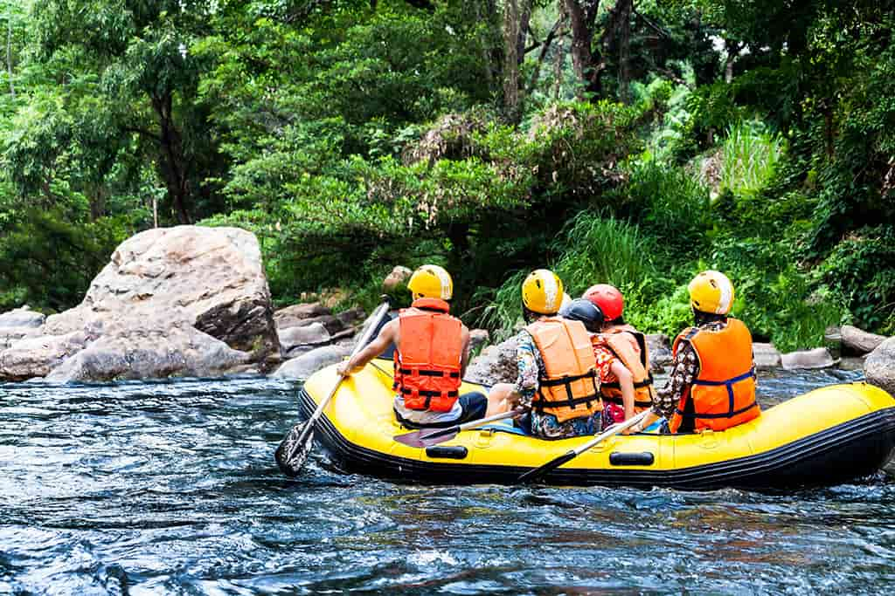
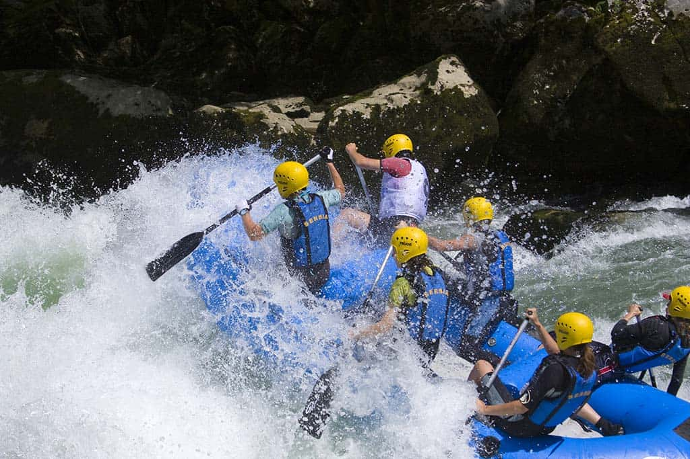

At Splashy Rapids Adventures, our mission is to ride the waves of joy and float on the currents of excitement! We believe in the magic of paddle-powered laughter and the thrill of bubbling brooks. "Conquer the river, embrace the splash, and let every adventure be a tidal wave of fun!"

Splashy Rapids Adventures
History
Splashy Rapids Adventures began in the whimsical year of 2020 when a group of intrepid explorers discovered a magical river that flowed with glitter and laughter. Fueled by their love for adventure and a few too many marshmallow snacks, they decided to share this enchanting experience with the world. From our humble beginnings of navigating chocolate pudding rapids in backyard pools, we have grown into a leading rafting company, offering unforgettable journeys through bubbly waters and rainbow-filled skies. With a fleet of inflatable unicorns and paddle-powered giggles, our team is dedicated to ensuring every adventure is a splash-tastic success! Today, we proudly take our adventurers through the most thrilling and whimsical rivers, all while promoting the joy of laughter and the importance of bubblegum safety gear. Join us as we continue to ride the waves of fun, one delightful trip at a time!
Adventure Awaits You!
